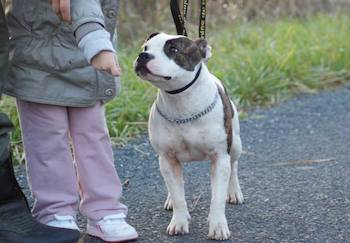

L'éducation du chien
Il existe plusieurs types d’éducation : stricte, laxiste et, entre les deux, un mélange de souplesse et de fermeté. L’éducation est fonction du caractère du maître (un caractère autoritaire sera tenté par une éducation stricte), de son mode de vie (maison ou appartement, par exemple), de l’entourage (présence d’enfants ou non), du caractère de la race (certaines sont obéissantes par nature) et du caractère personnel du chiot.
Quoi qu'il en soit, le dressage du chien est une étape essentielle.
La disponibilité
Un des points essentiels de l’éducation familiale est qu’elle peut se faire à tout moment de la journée … ou presque ! En effet, il faut que l’animal soit « disponible ». Il faut qu’il soit réceptif aux informations que vous allez lui donner.
Si vous décidez par exemple de le sortir pour lui apprendre la marche en laisse, n’interrompez surtout pas sa sieste. Il faut que vous le sentiez « ouvert », à l’aise. Rappelons que c’est le cas d’un chien qui porte la tête haute, les oreilles dressées, la queue horizontale et qui est content d’apprendre quelque chose de vous.
Si votre animal est en position de soumission, s’il « fait la tête », reportez de quelques instants la « leçon » ou remettez-le en confiance.
La constance
Seconde règle essentielle à rappeler : commencer l’éducation tout de suite. Les maîtres ont souvent peur d’embêter leur chiot dès les premiers jours, laissant alors l’animal faire ce qu’il veut.
Puis, décidant que le jour J est arrivé, ils changent de comportement et posent toutes sortes d’interdictions.
Le chien est perdu et ne comprend pas cette nouvelle situation. L’éducation doit débuter le jour de l’acquisition de l’animal. La première notion fondamentale est celle des points de repère du chien.
Nous vous proposons plusieurs cours d'educations
Education individuelle
Notre but est de vous aider à comprendre les réactions de votre chien, à modifier les mauvaises habitudes (pour le confort du maître et du chien) en vue d’une cohabitation et d’une relation harmonieuse.
Nous abordons la place du chien dans la maison et au sein de la famille, les interdits, pourquoi les faire respecter, comment punir et récompenser votre chien.
Cette 1ère étape est indispensable à la bonne compréhension de votre chien, à la réussite de son éducation et est la base d’une relation saine et harmonieuse. Elle vous aidera à comprendre et modifier des problèmes gênants (comme la propreté, les mordillements, les sauts, la solitude,…).
Le cours individuel est l’occasion aussi de poser les bases de l’éducation et des bonnes manières :Marcher en laisse, revenir à l’appel, rester tranquille, s’assoir, se coucher,…
Nous souhaitons assurer également le suivi éducatif de votre chien, c’est pourquoi nous réservons un cours individuel pour faire le point avant la fin des cours d’éducation.
Education collectif
Les cours collectifs permettent la mise en pratique des exercices dans des situations nouvelles pour le chien, dans un environnement avec plus de distractions.
Chacune de nos séances collectives de dressage du chien vous donnera ainsi l’occasion d’apprendre à contrôler votre chien dans des situations variées.
Ce type de cours permet de réduire les interférences dues à des perturbations extérieures telles que d’autres chiens, joggeurs, passants, enfants, vélos, etc.
Ecole du chiot

Cette méthode d'éducation du chiot, basée sur le jeu, permet au chiot quelle que soit sa race, d’acquérir dès son plus jeune âge les bons réflexes et de renforcer très tôt sa complicité avec son maître.
Animal de meute à l’origine, un chiot, a besoin d’être éduqué pour vivre en société.
Cette étape indispensable, au cours de laquelle il apprend à revenir dès qu’on l’appelle, à se familiariser avec l’environnement, à obéir aux ordres, à marcher en laisse sans tirer lors des promenades, avoir un comportement équilibré avec ses congénères ... nécessite du temps et des réflexes pas toujours connus par les propriétaires.
Agility
Travailler avec son chien et partager des moments avec lui instaure un lien fort et complice. L'éducation canine est la base obligatoire qui permet ensuite d'essayer différents sports canins.
L'agility est l'une de ces disciplines qui mêle complicité et détente sur des parcours de saut d'obstacles. Une activité ludique à partager avec son animal préféré tout au long de l'année !
Attestation d'aptitude
Formation obligatoire pour les maîtres de chiens catégorisés
Formation de 7h indispensable aux propriétaires de chiens de 1ère et 2ème catégorie comportant une partie théorique et une partie pratique.
Les races de chiens de catégorie 1 et 2 :
1ère catégorie : Chiens d’attaque
- Staffordshire terrier et American Staffordshire terrier ("Pitbulls")- Mastiff ("Boerbull")
- Tosa
2ème catégorie : Chiens de défense
- American Staffordshire terrier - Staffordshire terrier- Tosa
- Rottweiler (LOF et non LOF)